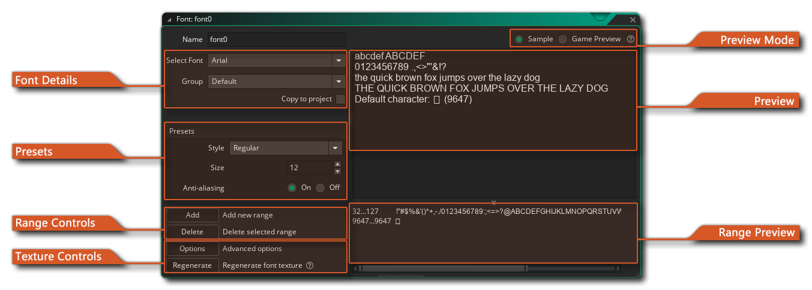
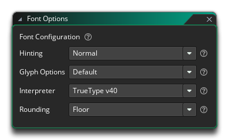
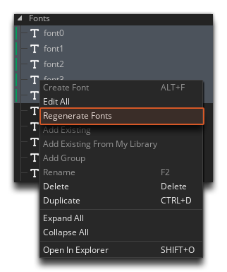

 When you want to draw text in your game this text is
drawn in a standard Arial 12 points font, but to make more
interesting or unique looking texts you will probably want to use
different fonts. So, to use different fonts that you have on your
computer you must create a font resource in GameMaker
Studio 2. This is done by right clicking  on the
"Fonts" folder in the resource tree and clicking on "Create". For
each font resource you create you specify a particular type of font
from your computer which can then be used in your game using the
action or code to set a font for drawing.
on the
"Fonts" folder in the resource tree and clicking on "Create". For
each font resource you create you specify a particular type of font
from your computer which can then be used in your game using the
action or code to set a font for drawing.
When you first create a font resource the font editor window will open with the following options:
Here you can give your font a unique name (alpha numeric characters and the "_" under-bar symbol only), as well as choose the font to use. The font must be installed on your machine and due to licensing issues, GameMaker Studio 2 does not store the actual font files with the project file by default, but rather the font is rendered to a texture page as pre-rendered glyphs. If you want to distribute the actual font file (*.ttf only) along with the project when making a Marketplace asset or for any other reason, you can check the option Copy To Project. This will open the file explorer where you can select the font file and it will then be added to the files bundled with the project.
IMPORTANT NOTE: You should only use fonts that you are legally permitted and licensed to redistribute or use in your project.
In this section you can set the size (in points - default is 12pt) and whether the font should be drawn as bold or italic or have anti-aliasing (edge smoothing) applied. The preview window on the right will show you the preview text as it will look with the size and transforms you have specified.
When creating a font resource it's rare that you'll want to include every single glyph for the font. This is why GameMaker Studio 2 defaults to using only the characters from 32 till 127 of the chosen font as this gives us the numbers and the small and capital letters along with certain punctuation marks. You can, however, change the character range used to help optimise your games ie: if you only need the numbers from a specific font, then only select the numbers. To do this, you should first click the Delete button to clear the current range (you may need to select the range for this to work by clicking
on it in the preview window) and then click on the Add button to add a new range. This will open the following chained window:
This window has some buttons to help you establish a standard range for your font:
- The Normal range from 32 till 127
- The ASCII range from 0 till 255
- The Digits range that only contains the 10 digits
- The Letters range that contains all upper-case and lower-case letters onlyOther ranges can be used by typing in the first and last character index of the range you wish to set in the character range input boxes (if a character does not lie in the range it is replaced by a space). Apart from these buttons and input boxes, you also have two further options which are especially useful:
- From Code: if you click on this button and then click OK, GameMaker Studio 2 will automatically parse your game code for strings and then create different character ranges to cover all the text in your game. Note that it looks for all strings (either within "" or '') and so may also include file names in the character ranges.
- From File: this works similarly to the "from code" option explained above. If you click on it, you will be asked to supply a file, and then once that is done you should click on OK. GameMaker Studio 2 will then parse the file and create character ranges for the text found within it.
Note that you can manually edit the text range by adding or deleting text glyphs into the preview window directly.
As mentioned above (in the section on Font Details) by default all font glyphs will be rendered to a texture page as part of a texture group to convert them into graphical resources, and when the game is compiled the font will be added to a temporary texture to create a single image with all the required font glyphs and then this will be added to the main texture group for exporting. The buttons here are for tweaking how the font texture is generated or for regenerating a new font texture.
The Options button will open up the advanced font texture options: 
These options can, sometimes radically, alter how a font will be displayed in the game, and not all fonts will require the same settings. The following options are designed to give you the greatest customisation possible for your font:
- Hinting: Font hinting (also known as instructing) is the use of mathematical instructions to adjust the display of an outline font so that it lines up with a rasterized grid. At low screen resolutions, hinting is critical for producing clear, legible text, and here you can select from different hinting algorithms to get the best result possible. Default is "normal".
- Glyph Options: These options can be used to change how the glyphs are loaded by enabling/disabling different operations. These are:
- Disable Hinting: This will disable the fonts native hinting and the auto-hinter.
- Disable Auto-Hinter: This will disable the auto-hinter and instead use the fonts native hinter (if it has one). Note that this overrides the "Prefer Auto-hinter" option.
- Prefer Auto-Hinter: This will tell GameMaker Studio 2 to prefer using the auto-hinter over any native hinting that the font may have. Note that this is overriden by the "Disable Auto-hinter" and "Disable Hinting" options.
- Warping: Enabling this will slightly warp glyphs to improve grid alignment. Note that this requires the auto-hinter and a "Normal" hinting mode.
- No Scale: When this option is checked it will keep glyphs in font units and ignore the requested size. This implies hinting is disabled.
- Interpreter: Here you can select the TrueType version that GameMaker Studio 2 should use for font rendering. Default is TrueType v40.
- Rounding: This option is for setting the rounding method when converting from a fixed point decimal size to an integer. Default is "floor".
The default state for all the above options is disabled.
The Regenerate button can be used to regenerate the font texture. This is required if you want to update any changes you've made to an existing font, or if you have created a new font and you want to see how it looks in the Preview Window. Note that you can also regenerate fonts from the right button
menu for the font (or fonts) in the resource tree.  It is important to note that when you first create a new font, if you don't regenerate the texture in the editor, then the texture will be created the first time you run or test your game, but that is the only time that t will be automatically generated. This means that once a font has a generated texture, any changes made to the font resource will require that the font is regenerated for the changes to be visible in the game, otherwise the "old" font texture will still be used.
GameMaker Studio 2 will store the generated font texture as a PNG file along with the rest of the project files, and should you load the project and the base font is not found, then the game will still display text correctly using the stored texture. A missing font will mean, however, that you can no longer change any of its properties, other than its name, font family and texture group (from the texture group editor).
In this section you can choose to have the Preview Window show either some sample text of the font selected, or the texture image that has been generated for the font.
The Preview Window is where you can see a preview of the font, either as a sample of text, or as a texture. When the Preview Mode is set to Sample, you can type in any text that you want to test directly into the preview window to see how it looks, while selecting Game Preview will show the texture image that was generated for the font. If no image is present, then you should click the Regenerate button to generate the texture. Note that the texture image can be different to the sample, since the texture will not be regenerated unless explicitly told to. This means that after you have initially generated a font texture, changes made to the font resource will not be carried over to the game unless the texture is regenerated.
Here the different ranges that you have added will be listed. The range values are shown on the left and the range glyphs are shown on the right.